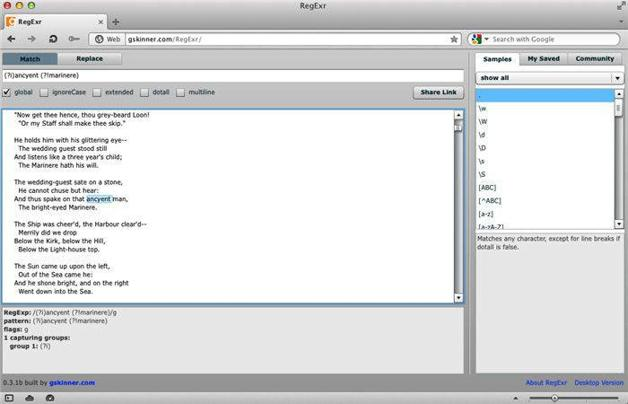

8.2 反前瞻
反前瞻是对正前瞻的取反操作。这意味着要匹配某个模式时，需要在它后面找不到含有给定前瞻模式的内容。反前瞻的形式是：
(?i)ancyent (?!marinere)
只有一个字符发生了变化：正前瞻的等号（=）变为反前瞻的感叹号（!）。图8-3所示为在Opera中执行反前瞻查找。

图8-3 Opera中使用RegExr的反前瞻
在Perl语言中，可以这样来使用反前瞻：
perl -ne 'print if (?i)ancyent (?!marinere)' rime.txt
而我们会得到的结果是：
And thus spake on that ancyent man,
And thus spake on that ancyent Man,
在ack中，可以用
ack -i 'ancyent (?!marinere)' rime.txt
得到相同结果。